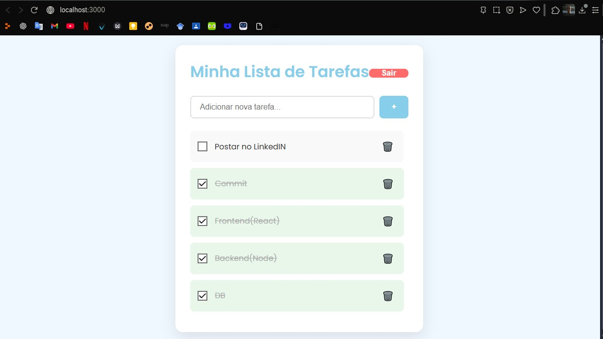

Meus Projetos

To-Do List (Lista de Tarefas)
Desenvolvido do zero, a aplicação conta com um front-end em React e uma API RESTful em Node.js com Express, conectada a um banco de dados MySQL. O sistema inclui autenticação de usuários com JWT para garantir que cada pessoa tenha sua lista de tarefas privada.
Ver no GitHub